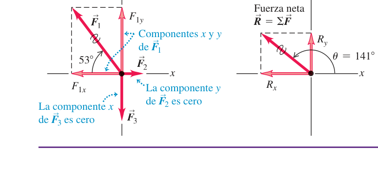
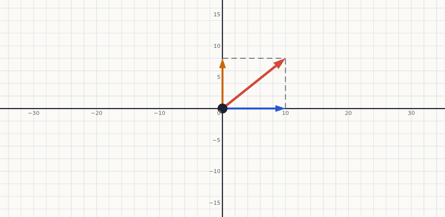
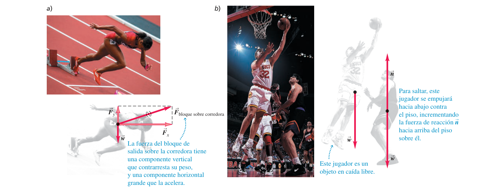

Leyes del movimiento de Newton
Las tres reglas que gobiernan cómo las fuerzas cambian (o no cambian) el movimiento: por qué nada se mueve sin motivo, por qué empujar más fuerte acelera más, y por qué toda fuerza tiene una "réplica" en el cuerpo que la ejerce.
El tema en 5 minutos P
Una sola idea: la velocidad de un cuerpo solo cambia si la suma de las fuerzas que otros cuerpos ejercen sobre él no es cero, y cambia justo en proporción a esa suma: $\sum\vec F=m\vec a$. Hasta ahora (temas 2-3) describías cómo se mueve algo; aquí aparece el porqué. Las tres leyes son cortas; lo que da trabajo es saber qué fuerzas actúan sobre quién, y para eso está el diagrama de cuerpo libre.
Necesitas: suma de vectores por componentes y módulo/ángulo (tema 1), y las ecuaciones de aceleración constante $a=\Delta v/\Delta t$, $v^2=v_0^2+2a\Delta x$ (temas 2-3). No hay matemáticas nuevas.
El método en 4 pasos (úsalo siempre, en este orden)
Las 6 fórmulas que hay que saber
| Fórmula | Cuándo se usa |
|---|---|
| $\vec R=\sum\vec F$, $\ R_x=\sum F_x$, $\ R_y=\sum F_y$ | Varias fuerzas sobre un cuerpo: «fuerza neta», «resultante». |
| $\sum\vec F=0\ \Leftrightarrow\ \vec a=0$ | «En reposo», «velocidad constante», «equilibrio» (1ª ley). |
| $\sum\vec F=m\vec a$, $\ 1\ \text{N}=1\ \text{kg}\cdot\text{m/s}^2$ | Casi siempre: fuerza ↔ aceleración (2ª ley). |
| $w=mg$ | «Pesa», «el peso es…», pasar de N a kg o viceversa. |
| $\vec F_{A\text{ sobre }B}=-\vec F_{B\text{ sobre }A}$ | Fuerza entre dos cuerpos, pares acción-reacción, fuerzas de contacto internas (3ª ley). |
| $a=\Delta v/\Delta t$ o $\ a=v^2/(2\Delta x)$ (cinemática) | Cuando el enunciado da movimiento y pide una fuerza. |
Qué cae en examen
Ningún examen de 2018 a 2025 tiene un problema ni una pregunta de teoría que sea de este tema en solitario. Aparece como ingrediente en tres problemas de cinemática con fuerzas (cohete, satélite, bala; resueltos en el tema 2) y es la base de todos los problemas de dinámica del tema 5, donde sí caen exámenes casi todos los años. Por eso conviene dominar aquí tres cosas: el diagrama de cuerpo libre, $\sum F=ma$ por ejes y la tercera ley sobre cuerpos distintos; y saber enunciar las leyes por si sale de teoría (guion al final). Las fechas de PEC las publica AGORA. P
Elige tu ruta
Esta página + secciones 🔴 1-6 + ejercicios del bloque «Núcleo».
Todo lo anterior + bloque «Práctica» + guion de teoría.
Chuleta, errores frecuentes, lista de comprobación y E5, E7 y E9 sin mirar la solución.
¿?¿Qué tipo de problema es? 🔴 P
Lee el enunciado, busca la pista en la primera columna y ve directo al método y al ejercicio modelo.
| Si el enunciado dice… | Haz esto | Ejercicio modelo |
|---|---|---|
| «fuerzas de … N a … grados», «fuerza neta», «resultante» | Componentes de cada fuerza, suma por ejes, módulo y ángulo con cuidado de cuadrante. | Sección 1 |
| «fuerza de … N produce una aceleración de …», «¿cuál es la masa?» | $\sum F$ en el eje del movimiento $=ma$; peso y normal se cancelan en vertical. | E1 |
| «pesa … N» y piden fuerza o aceleración | Primero $m=w/g$; después $F=ma$. | E2 |
| «se detiene en … s», «¿qué fuerza de fricción actúa?» | Cinemática con tiempo: $a=\Delta v/\Delta t$; luego $F=ma$. El signo de $a$ da el sentido de $F$. | E4 |
| «a lo largo de … m», «se detiene en una distancia», no dan el tiempo | $a=v^2/(2\Delta x)$; luego $F=ma$; compara $F$ con el peso. | E5, E6 |
| «ascensor que acelera», «¿qué marca la báscula?», «cuerda de la que cuelga…» | DCL con $+y$ hacia la aceleración: $n-w=ma$ o $T-mg=ma$. | E7 |
| «dos cajas en contacto», «¿con qué fuerza empuja una a la otra?» | $a=F/(m_A+m_B)$ con el conjunto; fuerza interna aislando un cuerpo. | E8 |
| «¿qué aceleración tiene la Tierra?», «la fuerza que ejerce … sobre …» | 3ª ley: misma fuerza; $a=F/m$ con la masa de cada cuerpo. | E3 |
| «dibuje los diagramas de cuerpo libre», «pares acción-reacción» | Un DCL por cuerpo; cada par, una fuerza en cada cuerpo distinto. | E9 |
| «velocidad constante, ¿qué fuerza neta?», «¿hace falta fuerza para…?» | 1ª ley: velocidad constante ⇒ $\sum F=0$. | Sección 2 |
| «Desarrolle el tema…» (leyes de Newton; masa y peso) | Guion: idea → ley y ecuación → ejemplo con números → error típico. | Teoría |
1Fuerza y superposición 🔴 U p.102-104
🎯 Antes de leer: dos personas empujan una caja: una hacia la derecha con 100 N y otra hacia la izquierda con 60 N. ¿Cuánto vale la fuerza neta y hacia dónde acelera? (Piénsalo 20 s; la respuesta está en esta sección.)
Una fuerza es un empujón o un jalón, y siempre es una interacción entre dos cuerpos: no existe una fuerza «suelta». Es un vector (módulo y dirección), se dibuja como flecha y se mide en newtons (N). Unas necesitan contacto (empujar, la cuerda, el rozamiento) y otras actúan a distancia (la gravedad).
Las cuatro que aparecen en casi todos los problemas:
- Normal $\vec n$: la superficie empuja perpendicular a sí misma ($n$ en cursiva para no confundirla con N).
- Fricción $\vec f$: paralela a la superficie, se opone al deslizamiento.
- Tensión $\vec T$: la cuerda tirante tira a lo largo de sí misma, nunca empuja.
- Peso $\vec w$: la gravedad tira hacia abajo, siempre, esté el cuerpo quieto, subiendo o en el aire.
Varias fuerzas sobre el mismo cuerpo hacen lo mismo que una sola, la fuerza neta o resultante:
$$\vec R=\sum\vec F=\vec F_1+\vec F_2+\cdots\ \ \text{(4.1)},\qquad R_x=\sum F_x,\ \ R_y=\sum F_y\ \ \text{(4.2)}$$Es la suma de vectores del tema 1: componentes de cada fuerza ($F_x=F\cos\theta$, $F_y=F\,\mathrm{sen}\,\theta$), suma por ejes, y de vuelta a módulo y ángulo con $R=\sqrt{R_x^2+R_y^2}$. Cuidado con los signos.
Ejemplo mínimo (3 luchadores). Tiran de un cinturón $F_1=250$ N a $127^\circ$, $F_2=50$ N a $0^\circ$ y $F_3=120$ N a $270^\circ$. Componentes: $(-150,\ 200)$, $(50,\ 0)$ y $(0,\ -120)$ N. Suma: $R_x=-100$ N, $R_y=80$ N, luego $R=128$ N. Como $R_x\lt0$ y $R_y\gt0$, el ángulo está en el 2º cuadrante: $\theta=141^\circ$.
U p.103-104
Dos fuerzas de 30 N y 40 N no dan 70 N salvo que apunten en el mismo sentido. Si son perpendiculares dan 50 N; si son opuestas, 10 N. Suma siempre componentes, nunca módulos.
P✍️ Comprueba que lo has entendido (2 min)
- Dos fuerzas de 30 N (eje $+x$) y 40 N (eje $+y$) actúan sobre un cuerpo. ¿Módulo y dirección de la fuerza neta?
Ver respuesta
$R=\sqrt{30^2+40^2}=50$ N, a $\arctan(40/30)=53.1^\circ$ del eje $x$. - Una caja de 5 kg está en reposo sobre una mesa. ¿Qué fuerzas actúan sobre ella y cuánto vale la normal? ($g=9.8$ m/s²)
Ver respuesta
Dos: el peso $w=5(9.8)=49$ N hacia abajo y la normal hacia arriba. No acelera, luego $n=49$ N. - ¿El peso es una fuerza de contacto?
Ver respuesta
No: es de largo alcance (la gravedad actúa a distancia). Por eso actúa aunque no haya nada tocando al cuerpo.
2Primera ley: sin fuerza neta no cambia la velocidad 🔴 U p.105-108
🎯 Antes de leer: un disco de hockey se desliza sobre hielo casi sin fricción. ¿Hace falta alguna fuerza para que siga moviéndose a velocidad constante? (Piénsalo 20 s; la respuesta está en esta sección.)
«Un cuerpo sobre el que no actúa una fuerza neta se mueve con velocidad constante (que puede ser cero) y aceleración cero.» Un disco de hockey sobre hielo apenas frena: solo necesita un empujón para cambiar su movimiento, no para mantenerlo.
$$\sum\vec F=0\ \Longleftrightarrow\ \vec a=0\ \ \text{(equilibrio, ec. 4.3)}$$Equilibrio no significa «sin fuerzas»: significa que las que hay se cancelan. La inercia es la tendencia de un cuerpo a conservar su velocidad.
U p.105-106Hace falta fuerza neta para acelerar, no para tener velocidad. Un coche a 250 km/h constantes y otro a 75 km/h constantes tienen fuerza neta cero los dos: el motor solo compensa el aire y el rozamiento, y no «sobra» fuerza para acelerar.
U p.105-107La primera ley solo vale vista desde un sistema inercial: uno que no acelera. La Tierra sirve en casi todos los problemas, y cualquier sistema que se mueva con velocidad constante respecto a uno inercial también lo es. En un coche que frena, los pasajeros «salen despedidos» hacia delante sin que ninguna fuerza los empuje: es su inercia, que los hace seguir con su velocidad mientras el coche cambia la suya.
U p.107-108✍️ Comprueba que lo has entendido (2 min)
- Un coche de 1200 kg circula a velocidad constante por una recta y su motor empuja con 2000 N. ¿Cuánto vale la fuerza neta y cuánto la resistencia total?
Ver respuesta
Fuerza neta 0 (velocidad constante). El aire y el rozamiento suman 2000 N, igual y opuesta a la del motor. - Una nave en el espacio vacío apaga los motores. ¿Qué le pasa a su velocidad?
Ver respuesta
Nada: sin fuerza neta mantiene velocidad constante y sigue en línea recta. - En un frenazo, ¿qué fuerza lanza a los pasajeros hacia delante?
Ver respuesta
Ninguna. Siguen con la velocidad que llevaban (inercia); lo que frena es el coche y el cinturón los retiene.
3Segunda ley: ΣF = ma 🔴 U p.108-113
🎯 Antes de leer: empujas con la misma fuerza un carrito vacío y otro cargado. ¿Cuál acelera más? ¿Qué magnitud lo explica? (Piénsalo 20 s; la respuesta está en esta sección.)
Si la fuerza neta no es cero, el cuerpo acelera: cuanto más empujas, más cambia la velocidad, y cuanto más masa tiene, menos cambia para la misma fuerza. Un carrito de la compra vacío acelera mucho más que uno lleno con el mismo empujón: la masa mide esa resistencia a acelerar.
U p.108-110«El vector de fuerza neta es igual a la masa del cuerpo multiplicada por su aceleración»: la aceleración va en la dirección de la fuerza neta.
$$\sum\vec F=m\vec a\ \ \text{(4.6)}\qquad\Longleftrightarrow\qquad\sum F_x=ma_x,\ \ \sum F_y=ma_y\ \ \text{(4.7)}$$Cada eje se trata por separado, como en cinemática. Unidad: $1\ \text{N}=1\ \text{kg}\cdot\text{m/s}^2$ (la fuerza que da 1 m/s² a 1 kg). La $m$ es la masa inercial. La ecuación vale con $m$ constante (no para un cohete que quema combustible) y en sistemas inerciales.
Ejemplo mínimo. Una fuerza neta de 20 N sobre 40 kg da $a=20/40=0.50$ m/s² (el peso y la normal se cancelan en vertical).
U p.110-112$\sum\vec F=m\vec a$ es una igualdad, no una fuerza más que haya que dibujar. A la izquierda va la suma de las fuerzas reales (peso, normal, tensión, fricción) que otros cuerpos ejercen sobre el que estudias; a la derecha, su efecto. Solo cuentan fuerzas externas: no puedes acelerarte tirando de tu propio cinturón.
U p.111-112Si el enunciado da posiciones, velocidades o tiempos y pide una fuerza, primero cinemática (temas 2-3) para hallar $a$, y después $\sum F=ma$. Si da fuerzas y pide tiempo, distancia o velocidad, al revés: $a=\sum F/m$ y luego cinemática. La aceleración es siempre el puente entre las dos mitades.
P
✍️ Comprueba que lo has entendido (2 min)
- Una fuerza neta de 12 N actúa sobre un cuerpo de 3 kg. ¿Qué aceleración tiene?
Ver respuesta
$a=12/3=4$ m/s², en la dirección de la fuerza. - Sobre un cuerpo de 4 kg tiran 6 N hacia la derecha y 2 N hacia la izquierda. ¿Aceleración?
Ver respuesta
$\sum F=6-2=4$ N, $a=4/4=1$ m/s² hacia la derecha. - Un coche de 1200 kg pasa de 0 a 25 m/s en 10 s. ¿Fuerza neta?
Ver respuesta
$a=25/10=2.5$ m/s² (cinemática); $F=ma=1200(2.5)=3000$ N.
4Masa y peso 🔴 U p.114-116
🎯 Antes de leer: viajas a la Luna: ¿cambia tu masa? ¿Y tu peso? (Piénsalo 20 s; la respuesta está en esta sección.)
El peso es una fuerza (se mide en N) y depende de dónde esté el cuerpo; la masa es una propiedad del cuerpo (kg) y no cambia.
$$w=mg\ \ \text{(4.8-4.9)},\qquad g=9.80\ \text{m/s}^2\ \text{en la Tierra},\quad 1.62\ \text{m/s}^2\ \text{en la Luna}$$En la Luna un cuerpo pesa aproximadamente $1/6$ que en la Tierra con exactamente la misma masa. Usa $g=9.80$ m/s² salvo que el problema dé otro valor.
U p.114-115| Masa | Peso | |
|---|---|---|
| Qué es | Resistencia a acelerar | Una fuerza (la gravedad) |
| Unidad SI | kg | N |
| ¿Cambia con el lugar? | No | Sí, proporcional a $g$ |
El peso actúa en todo momento (en reposo, subiendo, cayendo); en caída libre es la única fuerza y por eso $a=g$.
U p.114-115Un dato «pesa tantos N» es un peso. Antes de usar $\sum F=ma$ pásalo a masa: $m=w/g$. Ejemplo: un coche de peso $2.49\times10^4$ N tiene $m=2.49\times10^4/9.80=2540$ kg; multiplicar los N directamente por una aceleración mezcla N con kg.
U p.115✍️ Comprueba que lo has entendido (2 min)
- Un astronauta de 70 kg está en la Luna ($g=1.62$ m/s²). ¿Cuál es su masa y cuál su peso allí?
Ver respuesta
Masa 70 kg (no cambia). Peso $=70(1.62)=113$ N. - Un objeto pesa 98 N en la Tierra. ¿Cuál es su masa?
Ver respuesta
$m=98/9.8=10$ kg. - Un paquete de 200 N cuelga de una cuerda y sube con $a=2$ m/s². ¿Tensión? ($g=9.8$)
Ver respuesta
$m=200/9.8=20.4$ kg; $T-w=ma\Rightarrow T=200+20.4(2)=241$ N, más que el peso porque debe haber fuerza neta hacia arriba.
5Tercera ley: acción y reacción 🔴 U p.116-119
🎯 Antes de leer: un caballo tira de un carro y el carro tira del caballo con la misma fuerza. ¿Cómo es posible que se muevan? (Piénsalo 20 s; la respuesta está en esta sección.)
Cuando empujas una pared, la pared te empuja a ti con la misma fuerza en sentido contrario. Toda fuerza es una interacción entre dos cuerpos, así que siempre viene con su pareja.
U p.116«Si el cuerpo A ejerce una fuerza sobre el cuerpo B (una acción), entonces B ejerce una fuerza sobre A (una reacción). Las dos tienen la misma magnitud y dirección opuesta, y actúan sobre cuerpos diferentes.»
$$\vec F_{A\ \text{sobre}\ B}=-\vec F_{B\ \text{sobre}\ A}\ \ \text{(4.10)}$$Lo crucial: los dos miembros del par actúan sobre cuerpos distintos, así que nunca se cancelan entre sí en la suma de fuerzas de un mismo cuerpo. Vale para contacto y para gravedad: la Tierra atrae a una manzana y la manzana atrae a la Tierra con la misma fuerza. Que dos fuerzas de un par sean iguales no dice quién acelera: para eso se aplica la 2ª ley a cada cuerpo con su masa y todas sus fuerzas (por eso el bloque se mueve y el hombre, con mucho rozamiento en sus suelas, no).
U p.116-119El peso de una manzana y la normal de la mesa actúan sobre el mismo cuerpo y son de naturaleza distinta: no son acción-reacción. El par del peso es (Tierra tira de la manzana) ↔ (manzana tira de la Tierra); el de la normal, (mesa empuja a la manzana) ↔ (manzana empuja a la mesa): cuatro fuerzas, no dos.
U p.117-118Una cuerda ideal (sin masa) transmite la misma tensión a sus dos extremos: si el cantero tira con 50 N, el bloque recibe 50 N, ni 100 ni 25. La cuerda no multiplica ni gasta la fuerza, solo la transporta. Idea que usarás sin parar en el tema 5.
U p.118-119✍️ Comprueba que lo has entendido (2 min)
- Una manzana de 1 kg cae. ¿Con qué fuerza atrae a la Tierra? ($g=9.8$)
Ver respuesta
Con $9.8$ N, igual que la Tierra a ella, pero hacia arriba y sobre la Tierra (3ª ley). - Un libro reposa sobre una mesa: ¿son su peso y la normal un par acción-reacción?
Ver respuesta
No: actúan sobre el mismo cuerpo. Son iguales aquí porque $a=0$ (2ª ley), no por la 3ª. - Un camión de $10^4$ kg choca con un mosquito de $10^{-6}$ kg. ¿Qué fuerza es mayor? ¿Qué cociente hay entre las aceleraciones?
Ver respuesta
Son iguales (3ª ley). Como $a=F/m$, $a_{mosquito}/a_{camión}=m_{camión}/m_{mosquito}=10^{10}$.
6Diagramas de cuerpo libre 🔴 U p.120-121
🎯 Antes de leer: al dibujar el diagrama de cuerpo libre de un cuerpo, ¿incluyes las fuerzas que él ejerce sobre otros? ¿Por qué? (Piénsalo 20 s; la respuesta está en esta sección.)
Con solo tres leyes, lo difícil es saber qué fuerzas actúan sobre quién: es fácil colar una que no toca, olvidar una que sí o mezclar las de dos cuerpos. La solución es un método casi mecánico: aislar un cuerpo y dibujar solo lo que le pasa a él.
U p.120- Elige un solo cuerpo y dibújalo aislado, sin lo que lo rodea.
- Dibuja solo las fuerzas externas que actúan sobre él (peso, normales, tensiones, fricción, empujones), nunca las que él ejerce sobre otros.
- Nunca pongas los dos miembros de un par acción-reacción en el mismo diagrama: cada uno vive en el DCL de un cuerpo distinto.
- Elige ejes (a menudo uno en la dirección del movimiento) y descompón las fuerzas que no estén sobre ellos.
- Escribe $\sum F_x=ma_x$ y $\sum F_y=ma_y$ (ec. 4.7).
Es la herramienta más rentable de toda la mecánica: la usarás en cada problema del tema 5 en adelante.
U p.120-121
Dibujar en el DCL de un cuerpo una fuerza que en realidad actúa sobre otro (por ejemplo, la que la caja ejerce sobre la mesa), o poner un par acción-reacción completo en un único diagrama. Todas las flechas de un DCL son fuerzas que otros ejercen sobre ese cuerpo.
U p.120-121✍️ Comprueba que lo has entendido (2 min)
- ¿Cuántas fuerzas hay en el DCL de un libro en reposo sobre una mesa?
Ver respuesta
Dos: peso (hacia abajo) y normal de la mesa (hacia arriba). La fuerza que el libro hace sobre la mesa va en el DCL de la mesa. - Una caja de 4 kg se tira con 20 N horizontales sobre un suelo sin fricción. ¿Cuántas fuerzas hay en su DCL y cuánto vale $a$?
Ver respuesta
Tres: peso, normal y los 20 N. $a=20/4=5$ m/s². - Una pelota ya soltada de la mano vuela (sin aire). ¿Qué fuerzas actúan sobre ella?
Ver respuesta
Solo el peso. No hay ninguna «fuerza del lanzamiento» que la siga empujando.
7Ejercicios resueltos
Este tema no tiene ninguna pregunta de examen real propia (convocatorias 2018-2025), así que los ejercicios son los del solucionario (E1-E9, traducidos y ampliados), ordenados por método: siete en el Núcleo y dos de Práctica que repiten métodos con otros datos. Los ejemplos del libro que enseñan algo distinto (superposición de fuerzas, tensión de una cuerda) están resueltos dentro de la teoría. Intenta resolver tú antes de abrir la solución. Cada ejercicio termina con su receta. Si el enunciado no da $g$, se usa $9.80$ m/s².
| Ejercicio | Qué tipo es | Método que te llevas |
|---|---|---|
| E1 | Fuerza y aceleración en una dirección | $\sum F$ en el eje del movimiento $=ma$; peso y normal se cancelan en vertical |
| E4 | Cinemática con tiempo → fuerza | $a=\Delta v/\Delta t$ (tema 2); después $\sum F=ma$; el signo de $a$ da el sentido de $F$ |
| E5 | Cinemática sin tiempo + DCL antes y después | $a=v^2/(2\Delta x)$; $F=ma$; tras soltar la pelota solo queda el peso |
| E7 | Ascensor: peso aparente | DCL con $+y$ hacia la aceleración: $n-w=ma$, $T-mg=ma$ |
| E8 | Dos cuerpos en contacto | $a=F/(m_A+m_B)$ con el conjunto; fuerza interna aislando un cuerpo |
| E3 | Tercera ley con masas muy distintas | misma fuerza en los dos cuerpos; $a=F/m$ con la masa de cada uno |
| E9 | DCL de dos cuerpos y pares acción-reacción | un DCL por cuerpo; cada par: una fuerza en cada cuerpo distinto |
E1 — Problema 4.9: masa a partir de fuerza y aceleración 🔴 E
Una caja descansa sobre un estanque helado sin fricción, que actúa como una superficie horizontal sin rozamiento. Si un pescador aplica una fuerza horizontal de 48.0 N a la caja y produce una aceleración de 2.20 m/s², ¿cuál es la masa de la caja?
Inténtalo primero; abre una pista solo si te atascas.
Pista 1
Sin fricción, la única fuerza horizontal es la aplicada; el peso y la normal se cancelan en vertical.
Pista 2
$m=\sum F_x/a_x$.
Solución completa
- Como no hay fricción, la única fuerza horizontal es la aplicada (el peso y la normal se cancelan en el eje vertical, $a_y=0$): $\sum F_x=F=48.0$ N.
- Despejando de la segunda ley (ec. 4.6): $m=\dfrac{\sum F_x}{a_x}=\dfrac{48.0\ \text{N}}{2.20\ \text{m/s}^2}=21.8$ kg.
E4 — Problema 4.7: un patinador frenando, cinemática + segunda ley 🔴 E
Un patinador sobre hielo de 68.5 kg que se mueve a 2.40 m/s se detiene uniformemente en 3.52 s por la fricción del hielo contra los patines. ¿Qué fuerza de fricción (magnitud y dirección) actúa sobre el patinador?
Inténtalo primero; abre una pista solo si te atascas.
Pista 1
Cinemática primero: $a=\Delta v/\Delta t$ (negativa, porque frena).
Pista 2
Segunda ley: $f_x=ma_x$; el signo de $a$ da el sentido de la fuerza.
Solución completa
- Cinemática primero (tema 2, $a=\Delta v/\Delta t$): $a_x=\dfrac{0-2.40}{3.52}=-0.682\ \text{m/s}^2$.
- Segunda ley: $f_x=ma_x=68.5\times(-0.682)=-46.7$ N, es decir, 46.7 N opuesta al sentido del movimiento.
E5 — Problema 4.37: el lanzamiento de béisbol, sin tiempo dado 🔴 E
El lanzamiento de béisbol más rápido medido es de 46 m/s. Una pelota de béisbol suele tener una masa de 145 g. Si el lanzador ejerció su fuerza (suponiéndola horizontal y constante) a lo largo de 1.0 m: a) ¿qué fuerza produjo sobre la pelota durante este lanzamiento récord? b) Dibuja los diagramas de cuerpo libre de la pelota durante el lanzamiento y justo después de salir de la mano.
Inténtalo primero; abre una pista solo si te atascas.
Pista 1
No hay tiempo: $v^2=v_0^2+2a\,\Delta x$ da la aceleración.
Pista 2
$F=ma$; compara con el peso de la pelota para justificar que se desprecie.
Solución completa
- a) No hay tiempo, así que se usa la ecuación de cinemática sin $t$ (tema 2): $v^2=v_0^2+2a\Delta x \Rightarrow a=\dfrac{v^2}{2\Delta x}=\dfrac{46^2}{2\times1.0}=1058\ \text{m/s}^2$.
- Segunda ley: $F=ma=0.145\times1058=153$ N (tratando el movimiento como horizontal, despreciando el peso).
- Comparación: el peso de la pelota es $w=0.145\times9.8=1.42$ N; $F/w\approx108$ — durante el lanzamiento, la fuerza del brazo es unas 108 veces mayor que el propio peso de la pelota, lo que justifica despreciar el peso frente a esa fuerza.
- b) Durante el lanzamiento: actúan la fuerza de la mano (horizontal, 153 N) y el peso (1.42 N, hacia abajo, pequeño frente a la anterior). Justo después de soltarla: la mano deja de tocar la pelota, así que desaparece esa fuerza; solo queda el peso, hacia abajo. No hay ninguna "fuerza del lanzamiento" que siga acompañando a la pelota en el aire.
E7 — Problema 4.8: peso aparente en un ascensor 🔴 E
Una persona de peso 625 N está de pie sobre una báscula dentro de un ascensor que acelera hacia arriba a 2.50 m/s². a) ¿Qué marca la báscula? b) Si además lleva un paquete de 3.85 kg colgado de una cuerda vertical, ¿qué tensión hay en la cuerda?
Inténtalo primero; abre una pista solo si te atascas.
Pista 1
Con $+y$ hacia arriba, $n-w=ma$: la báscula marca la normal, no el peso.
Pista 2
Para el paquete, $T-mg=ma$: ambos aceleran con el ascensor.
Solución completa
- Masa de la persona: $m=w/g=625/9.80=63.8$ kg.
- a) La báscula marca la fuerza normal $n$ que ejerce sobre la persona, no directamente su peso. Con $+y$ hacia arriba (la aceleración del ascensor): $n-w=ma \Rightarrow n=w+ma=625+63.8\times2.50=784$ N. Es mayor que el peso real (625 N) porque la fuerza neta debe apuntar hacia arriba para producir esa aceleración.
- b) Para el paquete, colgado en equilibrio respecto al ascensor pero acelerando con él: $T-mg=ma \Rightarrow T=m(g+a)=3.85\times(9.80+2.50)=3.85\times12.30=47.4$ N (frente a $T=mg=37.7$ N si el ascensor estuviera en reposo o a velocidad constante).
E8 — Problemas 4.25 y 4.23: dos cajas en contacto, identificar el único par acción-reacción 🔴 E
Dos cajas, A y B, están en contacto sobre una superficie horizontal sin fricción, con masas $m_A$ y $m_B$. Se aplica una fuerza horizontal $F$ a la caja A, y ambas se mueven juntas hacia la derecha. a) Dibuja el diagrama de cuerpo libre de A y de B por separado, e identifica los pares acción-reacción. b) Si $F$ es menor que el peso total de las dos cajas, ¿se mueven de todos modos? Complemento numérico: con $m_A=20.0$ kg, $m_B=5.0$ kg y $F=250$ N, halla la fuerza de contacto entre las cajas.
Inténtalo primero; abre una pista solo si te atascas.
Pista 1
Un DCL por caja. El único par acción-reacción es el de contacto entre A y B (el peso y la normal de una misma caja no son pareja).
Pista 2
Aceleración con el sistema completo, $a=F/(m_A+m_B)$; la fuerza interna aislando B.
Solución completa
- DCL de A: la fuerza aplicada $F$, su peso, la normal del suelo, y la fuerza que B ejerce sobre A (hacia la izquierda, "empujando de vuelta" porque A empuja a B hacia delante). DCL de B: su peso, su normal, y la fuerza que A ejerce sobre B (hacia la derecha, la que la empuja).
- El único par acción-reacción de este problema es $\vec F_{A\text{ sobre }B}=-\vec F_{B\text{ sobre }A}$, entre las dos cajas. El peso y la normal de una misma caja no son un par acción-reacción entre sí (actúan sobre el mismo cuerpo y son de naturaleza distinta) — sus verdaderos pares son con la Tierra y con el suelo respectivamente, que no aparecen dibujados aquí.
- b) Sí, se mueven para cualquier $F>0$: no hay fricción que se oponga horizontalmente, y el peso (vertical) no compite con $F$ (horizontal) — son ejes independientes, como siempre en dinámica.
- Complemento numérico. Primero el sistema completo (A+B como un solo bloque de masa total): $a=\dfrac{F}{m_A+m_B}=\dfrac{250}{25.0}=10.0\ \text{m/s}^2$.
- Después se aísla el cuerpo más simple, B, para hallar la fuerza interna: $F_{A\text{ sobre }B}=m_Ba=5.0\times10.0=50$ N.
- Comprobación aislando A: $F-F_{B\text{ sobre }A}=m_Aa \Rightarrow 250-F_{B\text{ sobre }A}=20.0\times10.0 \Rightarrow F_{B\text{ sobre }A}=50$ N — igual en magnitud a $F_{A\text{ sobre }B}$, exactamente como exige la 3ª ley.
E3 — Problema 4.24: la estudiante y la Tierra, tercera ley aplicada 🟡 E
Una estudiante de 45 kg salta desde un trampolín, adquiriendo una aceleración hacia abajo (hacia la Tierra) de 9.8 m/s². La masa de la Tierra es $6.0\times10^{24}$ kg. ¿Cuál es la aceleración de la Tierra correspondiente hacia ella?
Inténtalo primero; abre una pista solo si te atascas.
Pista 1
La 3.ª ley da la magnitud de la fuerza que la estudiante ejerce sobre la Tierra (441 N).
Pista 2
Aplica $a=F/m$ con la masa del cuerpo sobre el que actúa esa fuerza: la de la Tierra.
Solución completa
- La fuerza sobre la estudiante es su peso: $w=mg=45\times9.8=441$ N (esto ya es, en sí mismo, la 2ª ley aplicada a ella).
- Por la 3ª ley, la estudiante ejerce sobre la Tierra una fuerza de la misma magnitud, 441 N, en sentido contrario — pero sobre un cuerpo distinto (la Tierra, no ella).
- Aplicando la 2ª ley a la Tierra con su propia masa: $a_{\text{Tierra}}=F/m_{\text{Tierra}}=441/(6.0\times10^{24})=7.4\times10^{-23}\ \text{m/s}^2$.
- Interpretación: las fuerzas son exactamente iguales, pero como $a=F/m$, las aceleraciones están en razón inversa a las masas — por eso, aunque la Tierra "sube" hacia la estudiante, ese movimiento es completamente imperceptible.
E9 — Problema 4.30: la caja que resbala en la plataforma de una camioneta 🟡 E
Una caja grande con su computadora nueva descansa en la plataforma de su camioneta, detenida en un semáforo. El semáforo cambia a verde, usted pisa el acelerador y la camioneta acelera. Horrorizado, ve cómo la caja empieza a deslizarse hacia la parte trasera de la plataforma (la plataforma de la camioneta no tiene fricción). Dibuje diagramas de cuerpo libre claramente especificados para la camioneta y para la caja, e indique los pares acción-reacción según la tercera ley.
Inténtalo primero; abre una pista solo si te atascas.
Pista 1
DCL de la caja sobre una plataforma sin fricción: solo el peso y la normal; no hay fuerza horizontal.
Pista 2
Por la primera ley la caja conserva su velocidad respecto al suelo; es la camioneta la que se adelanta.
Solución completa
- DCL de la caja (plataforma sin fricción): solo actúan su peso $\vec w$ (hacia abajo) y la normal $\vec n$ de la plataforma (hacia arriba); no hay ninguna fuerza horizontal, porque la plataforma no tiene fricción.
- Por qué se desliza, sin ninguna fuerza horizontal sobre ella. Por la primera ley, sin fuerza neta horizontal la caja mantiene su velocidad: sigue en reposo respecto al suelo mientras la camioneta acelera por debajo de ella. Vista desde el suelo, la caja no "se desliza hacia atrás" en absoluto: es la camioneta la que avanza y dejas atrás a la caja. Solo respecto a la plataforma (que sí acelera) parece que la caja retrocede.
- DCL de la camioneta: su peso, las normales del suelo sobre las ruedas, la fuerza de tracción que el suelo ejerce sobre las ruedas motrices (hacia adelante), y la normal que la caja ejerce sobre la plataforma (hacia abajo, reacción a $\vec n$).
- Pares acción-reacción: el único par entre caja y camioneta es (normal plataforma→caja, hacia arriba) ↔ (normal caja→plataforma, hacia abajo). El peso de la caja no forma par con nada de este diagrama: su pareja es la atracción que la caja ejerce sobre la Tierra.
Si la plataforma sí tiene fricción, el razonamiento cambia: la fricción cinética (la que aparece mientras dos superficies deslizan entre sí; el Tema 5 la trata en detalle) de la plataforma sobre la caja actúa hacia adelante (se opone al deslizamiento relativo de la caja hacia atrás), con su reacción sobre la plataforma hacia atrás — un segundo par acción-reacción, (fricción plataforma→caja) ↔ (fricción caja→plataforma). La caja desliza porque esa fricción, con su valor máximo, no basta para darle la misma aceleración que a la camioneta.
E2 — Problema 4.17: cuidado, un peso no es una masa 🟡 E
Supermán lanza un peñasco de 2400 N a un adversario. ¿Qué fuerza horizontal debe aplicar al peñasco para darle una aceleración horizontal de 12.0 m/s²?
- 2400 N es un peso, no una masa. Antes de aplicar $\sum F=ma$ hace falta convertir con $w=mg$ (sección 4.4): $m=w/g=2400/9.80=244.9$ kg.
- Fuerza necesaria: $F=ma=244.9\times12.0=2940$ N.
- Comprobación de sentido: $F/w=2940/2400=1.22>1$, coherente con pedir una aceleración (12.0 m/s²) mayor que $g$ (9.80 m/s²) — hace falta más fuerza que el propio peso.
E6 — Problema 4.36: "se detiene en una moneda" — comprobar un anuncio absurdo ⚪ E
Un anuncio afirma que cierto coche de 850 kg puede "detenerse en una moneda de diez centavos" (diámetro 1.8 cm) al frenar desde 45.0 km/h. ¿Qué fuerza media de frenado se necesitaría?
- Convertir a SI: $v_0=45.0\ \text{km/h}=12.5\ \text{m/s}$; $d=1.8\ \text{cm}=0.018\ \text{m}$.
- Deceleración con $v^2=v_0^2+2a d$ (llega a $v=0$): $a=-\dfrac{v_0^2}{2d}=-\dfrac{12.5^2}{2\times0.018}=-4340\ \text{m/s}^2$ (unas 443 veces $g$).
- Fuerza: $F=m|a|=850\times4340=3.7\times10^6$ N — unas 440 veces el propio peso del coche ($w=850\times9.8=8330$ N).
- Conclusión: es físicamente absurdo; ningún sistema de frenos real puede ejercer semejante fuerza. El "anuncio" es imposible según la propia segunda ley de Newton.
1. Un peso no es una masa P
Un peñasco pesa 2400 N. ¿Qué fuerza horizontal le da una aceleración de 12,0 m/s²?
Solución con fallo. $F=ma=2400\times12{,}0=2{,}88\times10^4$ N.
¿Qué falla?
2400 N es un peso, no una masa. $m=w/g=2400/9{,}80=244{,}9$ kg y $F=ma=244{,}9\times12{,}0=\mathbf{2940\ N}$ (algo más que el peso, porque $a\gt g$).
2. Signo en el ascensor P
Una persona de 625 N está sobre una báscula en un ascensor que acelera hacia arriba a 2,50 m/s². ¿Qué marca?
Solución con fallo. «El ascensor sube, luego $n=w-ma$»: $625-159=466$ N.
¿Qué falla?
Con $+y$ hacia arriba, $n-w=ma\Rightarrow n=w+ma=625+63{,}8(2{,}50)=\mathbf{784\ N}$: mayor que el peso, porque la báscula debe empujar más para acelerarla hacia arriba.
3. Tercera ley y aceleración P
Una estudiante de 45 kg cae con $a=9{,}8$ m/s². ¿Qué aceleración tiene la Tierra ($6{,}0\times10^{24}$ kg) por la reacción?
Solución con fallo. «Las fuerzas son iguales, luego las aceleraciones también»: $9{,}8$ m/s².
¿Qué falla?
Las fuerzas son iguales (441 N) pero actúan sobre cuerpos distintos: $a_{Tierra}=F/m_{Tierra}=441/(6{,}0\times10^{24})=\mathbf{7{,}4\times10^{-23}\ m/s^2}$, imperceptible.
4. Unidades en un frenazo P
Un coche de 850 kg se detiene en 1,8 cm desde 45,0 km/h. ¿Qué fuerza media de frenado hace falta?
Solución con fallo. $a=v_0^2/(2d)=45{,}0^2/(2\cdot0{,}018)$ y $F=ma=4{,}8\times10^7$ N.
¿Qué falla?
Los 45,0 km/h hay que pasarlos a m/s: $12{,}5$ m/s. Entonces $a=12{,}5^2/(2\cdot0{,}018)=4340$ m/s² y $F=850\times4340=\mathbf{3{,}7\times10^6\ N}$ (unas 440 veces el peso del coche: absurdo).
Guion propio (no es un enunciado de examen real). Define, da la ecuación, un ejemplo con números y cierra con el error típico:
- Leyes de Newton: (1) fuerza = vector de una interacción, superposición $\vec R=\sum\vec F$ (4.1); (2) 1ª ley: $\sum\vec F=0\Rightarrow\vec a=0$, inercia y sistemas inerciales; (3) 2ª ley: $\sum\vec F=m\vec a$ por componentes, $1\ \text{N}=1\ \text{kg}\cdot\text{m/s}^2$, ejemplo: 12 N sobre 3 kg dan 4 m/s²; (4) 3ª ley: $\vec F_{A\text{ sobre }B}=-\vec F_{B\text{ sobre }A}$, sobre cuerpos distintos; (5) error: pensar que la 3ª ley hace que las fuerzas «se cancelen» o que hace falta fuerza para mantener la velocidad.
- Masa y peso: (1) masa = resistencia a acelerar (kg, invariable), peso = fuerza gravitatoria $w=mg$ (N, depende de $g$); (2) ejemplo: 70 kg pesan 686 N en la Tierra y 113 N en la Luna; (3) en caída libre solo actúa el peso y $a=g$; (4) peso y normal de un cuerpo en reposo son iguales por la 2ª ley (con $a=0$), no por la 3ª; (5) error: multiplicar newtons por una aceleración sin pasar antes a masa.
8Chuleta, errores frecuentes y lista de comprobación
| Concepto | Fórmula (ec. de U) |
|---|---|
| Superposición | $\vec R=\sum\vec F$ (4.1); $R_x=\sum F_x$, $R_y=\sum F_y$ (4.2) |
| 1ª ley (inercia) | sin fuerza neta, velocidad constante (o reposo): $\sum\vec F=0\Leftrightarrow\vec a=0$ (4.3) |
| 2ª ley (dinámica) | $\sum\vec F=m\vec a$ (4.6); $\sum F_x=ma_x$, $\sum F_y=ma_y$ (4.7) |
| Newton | $1\ \text{N}=1\ \text{kg}\cdot\text{m/s}^2$ |
| Peso | $w=mg$ (4.9): fuerza en N, depende de $g$; $g=9.80$ m/s² (Luna: $1.62$) |
| 3ª ley (acción-reacción) | $\vec F_{A\text{ sobre }B}=-\vec F_{B\text{ sobre }A}$ (4.10): cuerpos distintos |
| Diagrama de cuerpo libre | un cuerpo, solo fuerzas externas sobre él, ejes, $\sum F=ma$ por eje |
| Cinemática de apoyo | $a=\Delta v/\Delta t$; $v^2=v_0^2+2a\Delta x$; $m=w/g$ |
- Creer que una fuerza neta mantiene la velocidad: solo hace falta para acelerar.
- Poner $m\vec a$ como una fuerza más en el DCL.
- Usar un dato en N como si fuera masa en $\sum F=ma$ (primero $m=w/g$).
- Emparejar peso y normal como acción-reacción, o dibujar las dos fuerzas de un par en el mismo cuerpo.
- Sumar módulos en vez de componentes, o mezclar en una misma ecuación fuerzas de ejes distintos.
- Suponer $n=w$ siempre: solo lo es si no hay aceleración vertical (en un ascensor que acelera, $n=m(g+a)$).
- Sé sumar fuerzas por componentes y dar módulo y ángulo de la fuerza neta (§1).
- Sé enunciar la primera ley y explicar por qué velocidad constante significa fuerza neta cero (§2).
- Sé aplicar $\sum F=ma$ por ejes, en una dirección y con varios cuerpos (§3, E1, E8).
- Sé distinguir masa de peso y pasar de uno a otro con $w=mg$ (§4, E2).
- Sé combinar cinemática (temas 2-3) con la segunda ley para hallar una fuerza o una aceleración (E4, E5, E6).
- Sé resolver un ascensor que acelera: $n=m(g+a)$ hacia arriba, $m(g-a)$ hacia abajo (E7).
- Sé identificar un par acción-reacción: dos cuerpos distintos, nunca peso con normal (§5, E3, E9).
- Sé dibujar un diagrama de cuerpo libre con solo las fuerzas externas sobre un cuerpo (§6).
- Sé desarrollar de memoria «Leyes de Newton» y «Masa y peso» (guion de teoría).